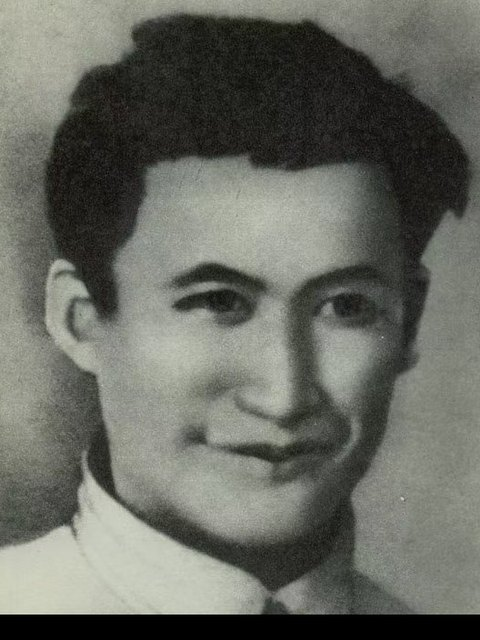
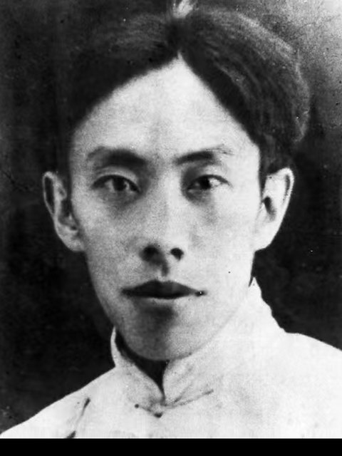
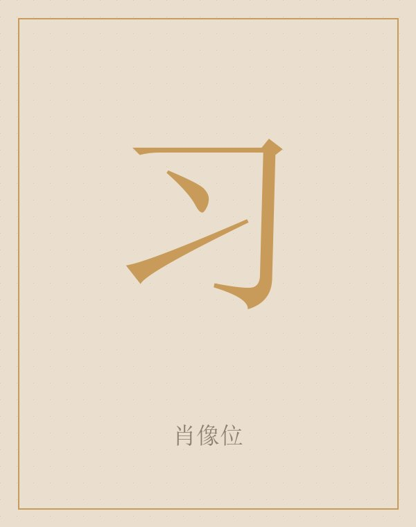
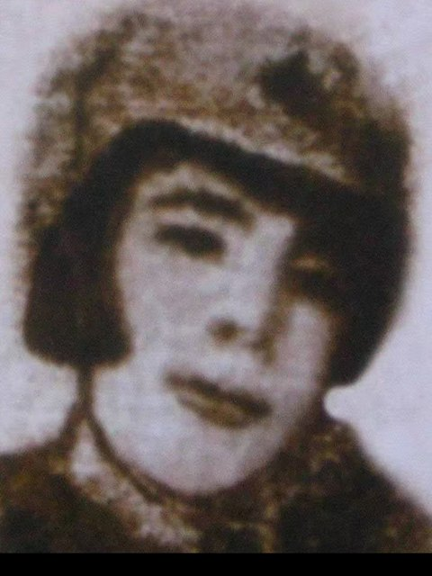
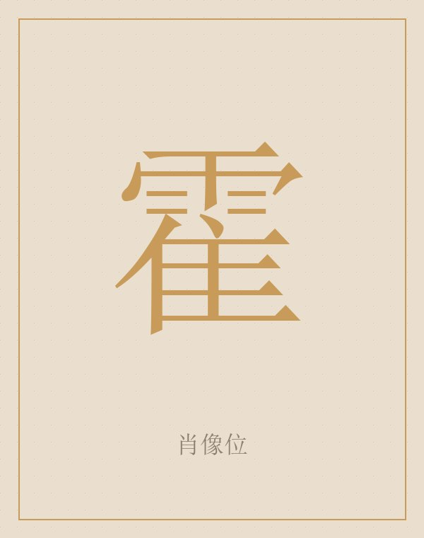
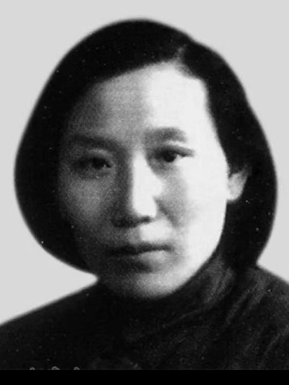
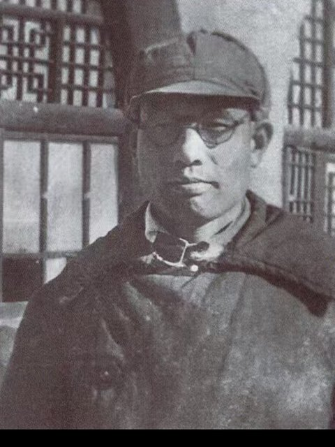
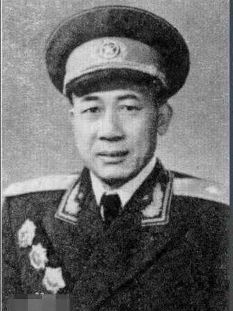
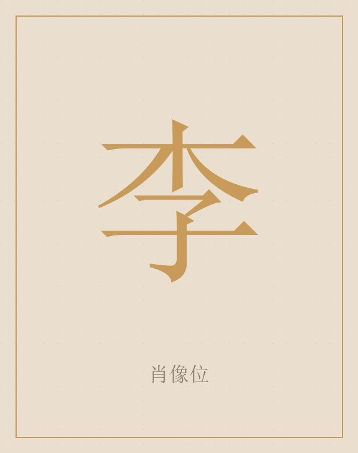

刘

刘志丹
1903—1936 陕甘边革命根据地主要创建者
1931 年 9 月在南梁建立游击队；1933 年 3 月在耀县杨柳坪对习仲勋说：最根本的一条，是要有根据地。1936 年 4 月 14 日率部东征，在山西中阳三交镇战斗中牺牲，年仅 33 岁。
毛泽东题词：群众领袖、民族英雄。
出处：人民政协报、光明日报、陇东报、陕西日报等，详见页脚来源。
再点一次翻回
南梁的故事里，留下名字的只有几十个人。这里挑出九个：两位创始人、一位最年轻的主席、一位女教员、两位开学的人、一位编课本的人、两位带兵开荒的人，和一个至死没开口的工人。

1903—1936 陕甘边革命根据地主要创建者
1931 年 9 月在南梁建立游击队；1933 年 3 月在耀县杨柳坪对习仲勋说：最根本的一条，是要有根据地。1936 年 4 月 14 日率部东征，在山西中阳三交镇战斗中牺牲，年仅 33 岁。
毛泽东题词：群众领袖、民族英雄。
出处：人民政协报、光明日报、陇东报、陕西日报等，详见页脚来源。
再点一次翻回

1897—1935 陕北红军和苏区主要创建人之一
1927 年 10 月参与领导清涧起义，在西北打响武装斗争第一枪；1928 年 5 月与刘志丹等组织渭华起义。1935 年 2 月 21 日因战伤恶化在安定县逝世。
毛泽东题词：民族英雄、虽死犹生。
出处：人民政协报、光明日报、陇东报、陕西日报等，详见页脚来源。
再点一次翻回

1913—2002 陕甘边区苏维埃政府主席
1933 年 3 月，19 岁的他在耀县杨柳坪第一次见到刘志丹。1934 年 2 月任陕甘边区革命委员会主席，11 月任苏维埃政府主席，时年 20 岁出头。
最年轻的主席，做的是最琐碎的事：分地、征粮、办学校。
出处：人民政协报、光明日报、陇东报、陕西日报等，详见页脚来源。
再点一次翻回

1911—1935 列宁小学教员、妇女委员长
从西安奔赴南梁的女青年，接替高敏珍任教员。据说她双手都能写字，被孩子叫作“妈妈老师”；教妇女唱“脚放开”的歌。1935 年牺牲，年仅 24 岁。
她把字教成了歌。
出处：人民政协报、光明日报、陇东报、陕西日报等，详见页脚来源。
再点一次翻回

列宁小学首任校长
共产党员。1934 年 2 月学校在四合台老庄河开学时，由他担任校长，借邵凤麟家三孔窑洞作教室。
第一所列宁小学，是从他手里开学的。
出处：人民政协报、光明日报、陇东报、陕西日报等，详见页脚来源。
再点一次翻回

列宁小学首任教员
1934 年 2 月起任教，是开学第一课的讲授者；11 月学校迁转咀子后，由张景文接替她的教学工作。
开学第一课，是她上的。
出处：人民政协报、光明日报、陇东报、陕西日报等，详见页脚来源。
再点一次翻回

列宁小学的教学与课本编写者
参与列宁小学的迁址与教学，与张景文等一起为学生编写课本；边区政府文化教育政策的执行者之一。
没有课本，他就自己编。
出处：人民政协报、光明日报、陇东报、陕西日报等，详见页脚来源。
再点一次翻回

770 团团长、政委
1943 年春，率 129 师 385 旅 770 团上千名战士进驻大凤川开荒生产，创造了陇东的“南泥湾”。
镢头和枪，一起扛。
出处：人民政协报、光明日报、陇东报、陕西日报等，详见页脚来源。
再点一次翻回

红军修械所工人
九眼泉村人，人称“李炮匠”。1934 年 5 月因与红军联络的信条被搜出被捕，受尽酷刑未吐一字，14 日凌晨遇害，年仅 34 岁。
一个字也没说。
出处：人民政协报、光明日报、陇东报、陕西日报等，详见页脚来源。
再点一次翻回
九人中，刘志丹、谢子长、张景文、高敏珍、蔡子伟、张才千六位找到了公开肖像；习仲勋、霍建德、李青山三位暂未找到可用照片，保留姓氏字块，不做替代性画像。肖像来自公开资料与纪念馆展陈，仅用于本次比赛的非商业展示。
访客登录
演示模式：昵称只保存在本机浏览器，不会上传服务器。